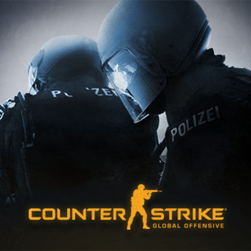

<div class="bg-dark px-4 py-5">
    <div class="row flex-lg-row-reverse align-items-center g-5 py-2 animate__animated animate__jackInTheBox">
      <div class="col-10 col-sm-8 col-lg-6">
        
      </div>
      <div class="col-lg-6">
        <div class="d-grid gap-2 d-md-flex justify-content-md-center">
          
        </div>
        <div class="d-grid gap-2 d-md-flex justify-content-md-center mt-2">
          <h1 class="display-5 fw-bold lh-1 mb-3">Counter-Strike: Global Offensive</h1>
        </div>
        <div class="d-grid gap-2 d-md-flex justify-content-md-center">
          <p class="lead">Vous surfez désormais sur notre section dédiée au jeu CS:GO.</p>
        </div>
        <div class="d-grid gap-2 d-md-flex justify-content-md-center">
          <button type="button" class="btn btn-lg px-4 me-md-2">
            <i class='bx bxl-discord-alt bx-spin bx-lg' style="color:#5865f2"></i>
          </button>
          <button type="button" class="btn btn-lg px-4 me-md-2" [matMenuTriggerFor]="general">
            <i class='bx bx-list-ul bx-tada bx-lg' style="color:#88B04B"></i>
          </button>
          <button type="button" class="btn btn-lg px-4 me-md-2" [matMenuTriggerFor]="servers">
            <i class='bx bx-server bx-tada bx-lg' style="color:#E15D44"></i>
          </button>
        </div>
  
        <!--GENERAL-->
        <mat-menu #general="matMenu">
          <button mat-menu-item routerLink="/csgo" routerLinkActive="active-link" [routerLinkActiveOptions]="{exact: true}"><mat-icon>home</mat-icon>Accueil</button>
          <button mat-menu-item routerLink="/csgo/team" routerLinkActive="active-link" [routerLinkActiveOptions]="{exact: true}"><mat-icon>supervised_user_circle</mat-icon>Voir l'équipage</button>
        </mat-menu>
  
        <!--NAVIGATION-->
        <mat-menu #servers="matMenu">
          <button mat-menu-item routerLink="/csgo/roleplay" routerLinkActive="active-link" [routerLinkActiveOptions]="{exact: true}"><mat-icon>polymer</mat-icon>Roleplay</button>
        </mat-menu>
      </div>
    </div>
  </div>
  
  <router-outlet></router-outlet>
  